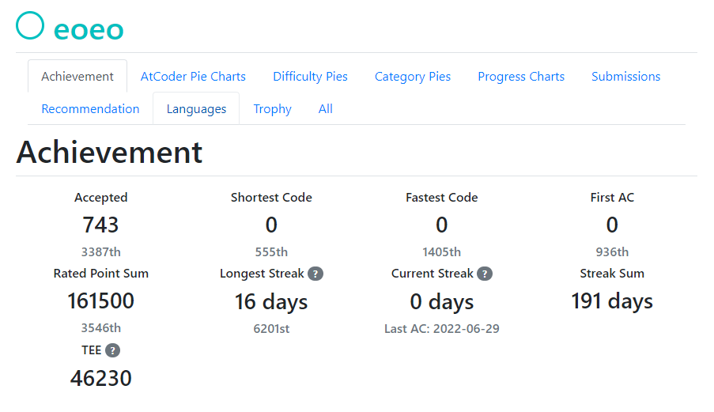
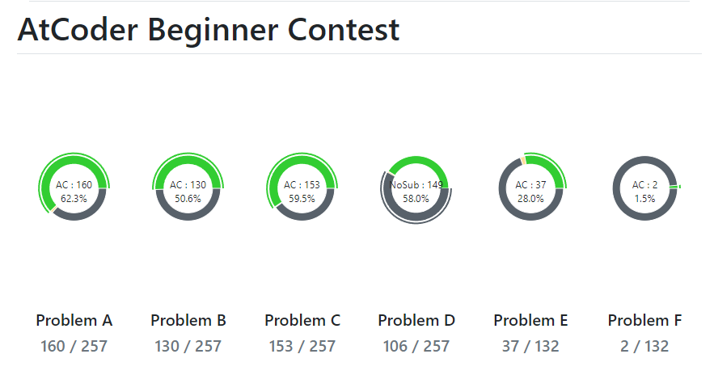
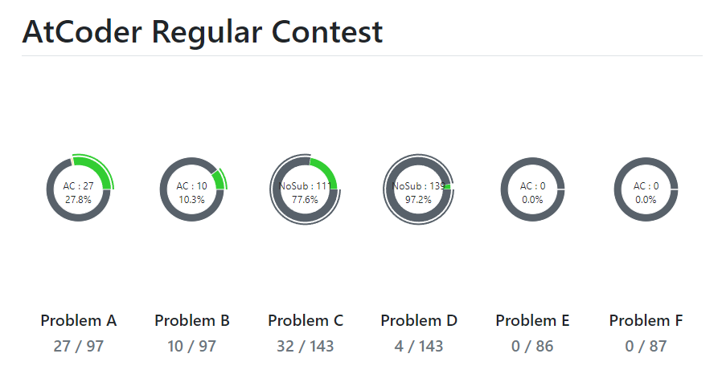
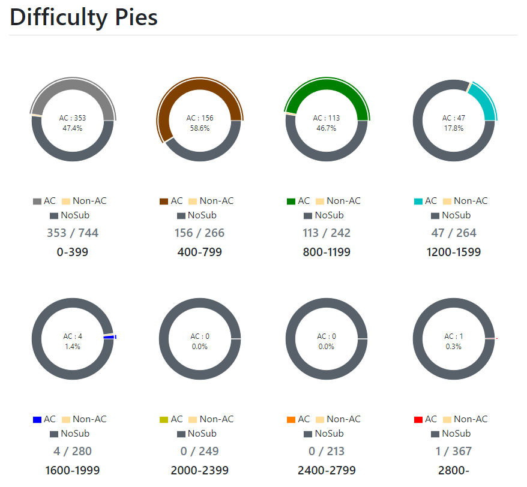
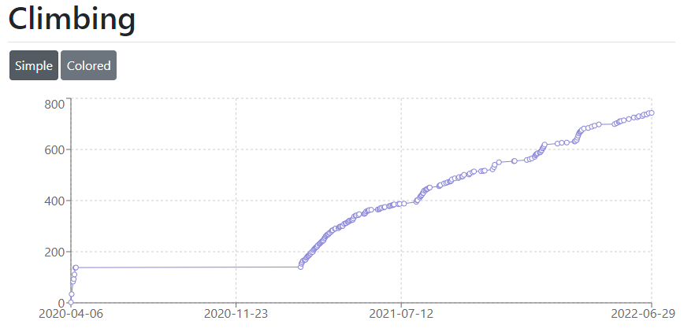

これまでの僕の競技プログラミング遍歴を書きます。書きたいことを書くので有益な情報はないかもしれません。あと、いまHTMLとかCSSの勉強をしていて、僕の知識が増えるにつれて内容をアップデートしていくつもりです。
えおえお、と申します。 (Atcoder : https://atcoder.jp/users/eoeo、 Twitter : https://twitter.com/eoeo_ooo)
学年はM1で数学を専攻しています。数学を専攻していますが、競プロで要求されるような整数だったり、数え上げだったりは苦手です。
あまり言ってなかったんですけどAtcoderを始めてからの大きな目標だったので泣いちゃいそうなくらい嬉しいです。一緒にバーチャルコンテストに出てくれた皆さん、ありがとうございました。おかげで楽しく競技プログラミングを続けることができました。
競技プログラミングが楽しくて沢山参加している時期と、忙しかったりコンテストで良い成績が取れなかったりで参加していない時期があります。
主にABCの問題を中心に解きました。
   競技プログラミングにハマっているときが一目瞭然な総AC数のグラフです。
レーティングやClimbingの画像を見てわかる通り、初めて競技プログラミングに触れたのは2020年の4月、B2とB3の間の春休みでした。多分カッコいいからという理由でプログラミングに手を出しました。しかし、Pythonの入門書を読んだ後に、何もやることがなくなりました。そこで、作りたいものがないなら競技プログラミングをやるのが良い、と目にしAtcoderに登録しました。一週間でABCのA問題を中心に100問強解き、一回コンテストに参加してC問題まで解いているようです。我ながらなかなか才能があります。でも、飽きたのかすぐに辞めてしまいました。
Atcoderに登録してから約一年後に再び競技プログラミングの問題を解き始めました。なぜかはよく覚えていないのですが、プログラミングを覚えて手に職を、みたいな気持ちがあったと思います。Pythonはもうすっかり忘れていて、大学でC言語の講義をとったので、APG4bを読んでC++で参入することにしました。ここで競技プログラミングの面白い部分まで到達することに成功し、一気に熱中します。また、Twitterで開かれていたバーチャルコンテストに参加したことが決定打となりました。バーチャルコンテストが楽しく、自分でも開くようになりました。競争することが僕は割と好きな方なんだと思います。このころに一緒に問題を解いていた方々を勝手にライバルだと思っています。バーチャルコンテストで問題をたくさん解く間にレーティングは緑色まで到達しました。
質問とかあったら教えてください。書きます。